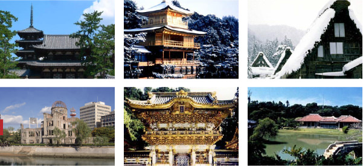
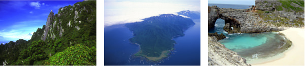

富士山の高さ＆山頂（さんちょう）の気温（きおん）
高さは3,775.63m
1月の平均（へいきん）マイナス18.5℃（ど）
8月の平均（へいきん）6.0℃（ど）
富士山は噴火（ふんか）するの？
富士山は、大昔（おおむかし）から何回（なんかい）も噴火（ふんか）しています。富士山が最後（さいご）に噴火（ふんか）したのは、今から約（やく）300年前の江戸時代（えどじだい）です。
山の高さをくらべてみよう
世界（せかい）の山
- エベレスト：8,848mネパール"Nepal"）
- K2(ケーツー)：8,611m（パキスタン"Pakistan"）
- カチェンジュンガ：8,586m（ネパール"Nepal"）
日本の世界遺産（せかいいさん）を知ろう
文化遺産（ぶんかいさん）
| 世界遺産の名前 | 登録年 | 所在地 |
|---|---|---|
| 法隆寺（ほうりゅうじ） 地域（ちいき）の仏教建造物（ぶっきょうけんぞうぶつ） |
1993年 | 奈良県 |
| 姫路城（ひめじじょう） | 1993年 | 兵庫県 |
| 古都（こと）京都（きょうと）の文化財（ぶんかざい） | 1994年 | 京都府 滋賀県 |
| 白川郷（しらかわごう） 五箇山（ごかやま）の合掌造り（がっしょうづくり）集落（しゅうらく） |
1995年 | 岐阜県 富山県 |
| 原爆（げんばく）ドーム | 1996年 | 広島県 |
| 厳島神社（いつくしまじんじゃ） | 1996年 | 広島県 |
| 古都（こと）奈良（なら）の文化財（ぶんかざい） | 1998年 | 奈良県 |
| 日光（にっこう）の社寺（しゃじ） | 1999年 | 栃木県 |
| 琉球王国（りゅうきゅうおうこく）のグスク及び関連遺産群（かんれんいさんぐん） | 2000年 | 沖縄県 |
| 紀伊山地（きいさんち）の霊場（れいじょう）と参詣道（さんけいみち） | 2004年 | 三重県 奈良県 和歌山県 |
| 石見銀山遺跡（いわみぎんざんいせき）とその文化的景観（ぶんかてきけいかん） | 2007年 | 島根県 |
| 平泉 - 仏国土：浄土（ぶっこくど：じょうど）を表す建築（けんちく） 庭園（ていえん）及び考古学的遺跡群（こうこがくてきいせきぐん） |
2011年 | 岩手県 |
| 富士山（ふじさん）- 信仰の対象（しんこうのたいしょう）と芸術の源泉（げいじゅつのげんせん） | 2013年 | 山梨県 静岡県 |
| 富岡製糸場（とみおかせいしじょう）と絹産業遺産群（きぬさんぎょういさんぐん） | 2014年 | 群馬県 |

自然遺産（しぜんいさん）
| 世界遺産の名前 | 登録年 | 所在地 |
|---|---|---|
| 白神山地（しらかみさんち） | 1993年 | 青森県 秋田県 |
| 屋久島（やくしま） | 1993年 | 鹿児島県 |
| 知床（しれとこ） | 2005年 | 北海道 |
| 小笠原諸島（おがさわらしょとう） | 2011年 | 東京都 |
